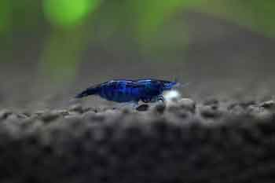
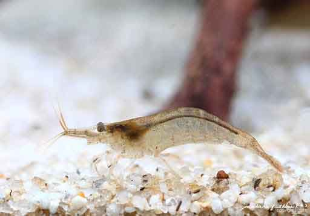
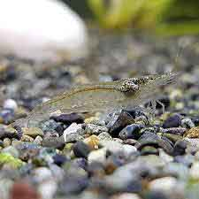
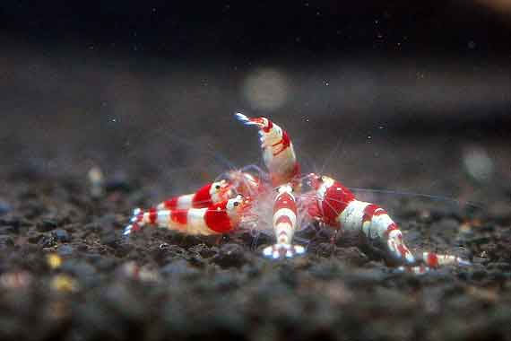
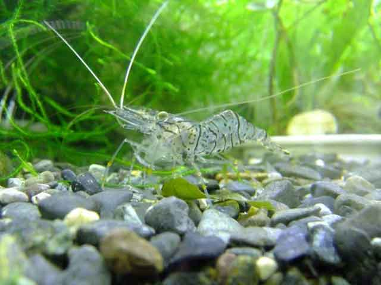
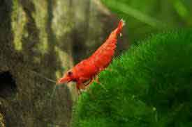

관상용 새우? 새우도 키우는 시대! 종류를 알아보자!
이제는 못 키우는 반려동물이 없는 것 같습니다. 각각의 동물 특성을 잘 이해만 한다면 이제는 가정에서 기르는 것도 어려운 일은 아니지요. 흔히 반려동물이라 하면 고양이나 강아지를 생각하기 쉽지만, 뜻밖에 독특한 동물을 키우는 분이 많습니다.
그중 하나가 바로 관상용 새우입니다. 관상용 새우는 일반적인 식용 새우와 달리 크기가 매우 작고, '관상용'이라는 말처럼 화려한 겉모습을 자랑합니다. 관상용 물고기처럼 어항만 있으면 키울 수 있어 관상용 새우에 대한 호기심과 관심이 날로 높아져 갑니다. 관상용 새우? 새우도 키우는 시대! 관상용 새우 종류에 대해서 알아볼게요.
[ 새우의 종류 ]
새우도 종류가 많은 편입니다. 그리고 계속해서 변화된 유전자로 더욱더 다양한 새우가 나오고 있죠.
1) 생이 새우
우리나라의 강가나 냇가 등에서 볼 수 있는 새우고 생명력이 강하고 주변 환경 적응력도 뛰어난 편입니다. 그리고 이러한 생이 새우의 변종이 체리새우, 블루벨벳 등이 있습니다.
 2) 비쉬림프
비쉬림프는 중국 출신의 새우로 특이한 품종이 많은 것으로 알려졌습니다. 그래서 소위 새우로 재테크를 하려는 분들이 많이 접근하는 종입니다. 비쉬림프 계열에서 나온 새우로 터키옥 새우, 킹콩 새우 등이 있습니다. 아무래도 관상용 새우는 재테크로 보는 경향이 있어서 여러 종을 조합해서 만들려는 노력이 계속되는 것 같습니다.
3) 징거미새우
관상용 새우라고 보기에는 다소 크기가 크고 긴 집게발을 가지고 있는 것이 특징입니다. 게다가 육식성으로 다른 종과는 구별된다고 할 수 있습니다.
큰 징거미새우라고 해서 양식어종의 또 다른 하나인 큰 집게발을 가진 새우도 있습니다.
4) 줄새우
우리나라에서 흔히 볼 수 있는 새우 중 하나입니다. 생이 새우에 비해서 크기도 크고 큰 몸집에 따라 공격성을 다소 띄고 있는 새우입니다. 만약 다른 새우와 함께 길러야 한다면 고민을 해보셔야 합니다. 공격성이 큰 새우일수록 합사가 어려운 편이니까요.
새우뿐만 아니라 가정에서 동물을 키우기 위해서는 동물의 특성을 잘 이해하는 것이 중요합니다. 이런 기본적인 이해도 없이 무작정 도전한다면, 얼마 가지 않아 아파 병든 새우를 비롯해 동물을 바라볼 수 있을 것입니다. 따라서 기본적은 특성을 잘 이해하고 관상용 새우를 키울 수 있어야 합니다.
새우를 키우기로 마음먹었다면, 몇 가지 주의사항을 참고하는 것이 좋습니다. 우선, 처음부터 무리하게 어려운 관상용 새우를 택하기보다는 쉽고 적응력이 좋은 단계의 새우를 구매하는 것이 좋습니다. 또, 물잡이 기간에 인내심을 갖고 기다리는 것이 중요합니다. 새우는 새로운 환경에 적응할 시간을 충분히 갖는 것이 중요합니다. 즉, 새우가 편하게 지낼 수 있는 시간을 기다려 주는 것이죠. 보통 1~2달 정도 걸리는 데 경험이 아주 중요한 요소라고 할 수 있습니다.
작다고 해서 결코 키우기 쉬운 것은 아닙니다. 충분히 사전에 공부가 된 상태에서 시작하는 것이 반려동물의 생명은 연장하고, 키우는 반려인의 행복도도 올라갈 것입니다.
[출처] 관상용 새우? 새우도 키우는 시대! 종류를 알아보자! ｜ 작성자 꼬미꼬미